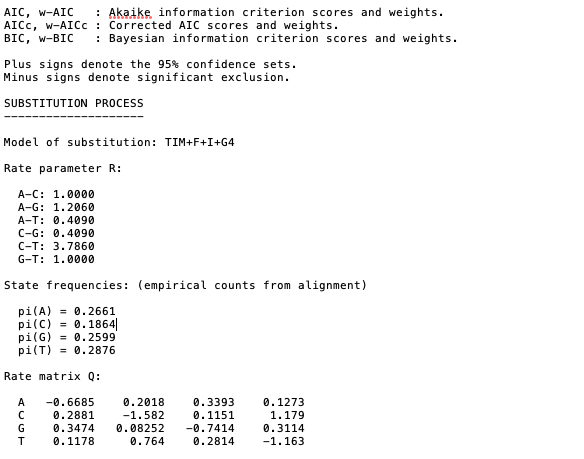

IQTREE
Building trees with IQTREE
IQTREE
Maximum likelihood
Quick tutorial on using IQ-TREE webserver
IQ-TREE is available as a downloadable program and as an online interface (via web servers).
It is a powerful program that is built for speed! Maximum likelihood methods can consume a lot of compute power, the web interface can do robust analysis in just minutes.
It has some fantastic documentation with detailed tutorials - see here. Current manual available here.
Some key features of IQ-TREE are:
- Efficient search algorithm: Fast and effective stochastic algorithm to reconstruct phylogenetic trees by maximum likelihood.
- Ultrafast bootstrap: An ultrafast bootstrap approximation (UFBoot) to assess branch supports. UFBoot is 10 to 40 times faster than RAxML rapid bootstrap and obtains less biased support values.
- Ultrafast model selection: An ultrafast and automatic model selection (ModelFinder) which is 10 to 100 times faster than jModelTest and ProtTest. ModelFinder also finds best-fit partitioning scheme like PartitionFinder.
- Phylogenetic testing: Several fast branch tests like SH-aLRT and aBayes test (Anisimova et al., 2011) and tree topology tests like the approximately unbiased (AU) test (Shimodaira, 2002).
The strength of IQ-TREE is the availability of a wide variety of phylogenetic models:
- Common models: All common substitution models for DNA, protein, codon, binary and morphological data with rate heterogeneity among sites and ascertainment bias correction for e.g. SNP data.
- Partition models: Allowing individual models for different genomic loci (e.g. genes or codon positions), mixed data types, mixed rate heterogeneity types, linked or unlinked branch lengths between partitions.
- Mixture Models: fully customizable mixture models and empirical protein mixture models and.
- Polymorphism-aware models (PoMo): http://www.iqtree.org/doc/Polymorphism-Aware-Models
Personally I like to use the web interface, it saves one less program taking up memory on your computer and is super quick!
I like to use the CIBID, Austria.
Reference for command line options are available here
1. Input Data
Your alignment file can be .fasta., .phylip, .nexus.
Select the Sequence type (you can keep it as Auto-detect if you like, but this will save any issues incase it does not recognise your data correctly).
Leave the Partion file blank
2. Subtitution Model Options
Details on subtitution models available here
If you have not already chosen your model, under Substitution model leave it as Auto and it will perform model selection for you.
I generally leave the FreeRate heterogeneity and Ascertainment bias correction options unchecked.
3. Branch Support analysis
Bootstrap analysis select Ultrafast. This will perform bootstrap approximation using the UFBoot method Minh et al. 2013.
Check the box next to Create .ufboot file and select 10,000 for Maximum iterations. I leave Minimum correlation coefficient as 0.99 and SH-aLRT branch test as Yes with 1000 # replicates. Select the check box next to Approximate Bayes test
4. IQ-TREE Search Parameters
I leave the Perturbation strength as 0.5 and IQ-TREE stopping rule as 100. Approximate Bayes test or 0.5
Enter your email and SUBMIT JOB
5. Output
Either click on the Analysis tab long the top or follow the link in the email and you will find your results. I find this server is super quick, usually seconds/minutes for a basic gene alignment with <100 sequences.
Select the box on the left hand side of your analysis and click the DOWNLOAD SELECTED JOBS at the bottom.
You can now open the trees for editing in your fave program - mine is FigTree.
Open the file ending in .contree to get the concensus tree. This will have the bootstrap supports (%) at the nodes.
If you open the .treefile you will find the support nodes for the SH-aLRT support (%) / aBayes support / ultrafast bootstrap support (%).
Details on the analysis including the results from the model selection, parameters, and citations can be found in the .log and .iqtree files [open these files using a simple text reader such as TextEdit for MacOS or similar].
Example of output from the .iqtree file showing that after model selection the phylogeny was based on the TIM + F + I + G4 subsitution model. Remember for more details on these model check out details here
